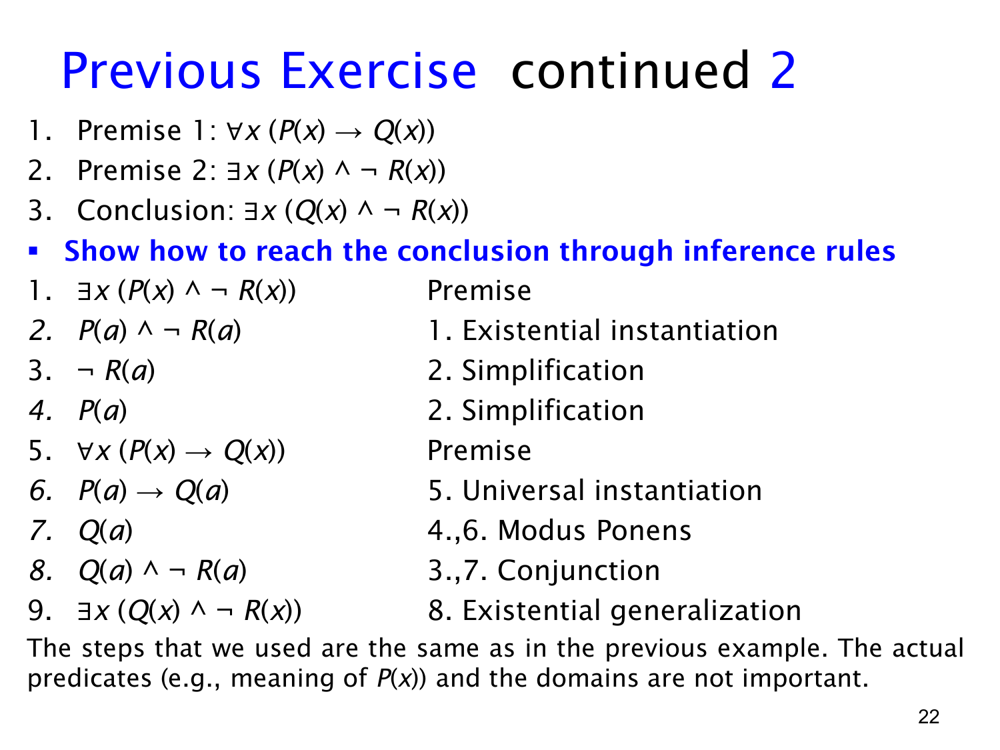

L1.3 · 第 22 页讲解原文
查看这一页课件

狮子练习的逐行证明与通用形式
本页给出上一页练习的正式证明。前提是 ∀x(P(x)→Q(x)) 与 ∃x(P(x)∧¬R(x))，结论是 ∃x(Q(x)∧¬R(x))。在狮子的语境中，P 是“是狮子”，Q 是“凶猛”，R 是“喝咖啡”。
| 行 | 断言 | 理由 |
|---|---|---|
| 1 | ∃x(P(x)∧¬R(x)) | 第二个前提 |
| 2 | P(a)∧¬R(a) | 从第 1 行作存在实例化，取一个新的见证 a |
| 3 | ¬R(a) | 从第 2 行作化简 |
| 4 | P(a) | 从第 2 行作化简 |
| 5 | ∀x(P(x)→Q(x)) | 第一个前提 |
| 6 | P(a)→Q(a) | 从第 5 行作全称实例化 |
| 7 | Q(a) | 第 4、6 行作肯定前件 |
| 8 | Q(a)∧¬R(a) | 第 3、7 行作合取引入 |
| 9 | ∃x(Q(x)∧¬R(x)) | 从第 8 行作存在概括 |
课件指出：这些步骤与前一个“学生、读书、通过课程”的例子相同。只需把谓词名称换掉，证明结构完全不变。它表达的通用推理是：如果每个 P 都是 Q，且存在一个既是 P 又不具备 R 的对象，那么存在一个既是 Q 又不具备 R 的对象。
“谓词的实际含义与论域不重要”是指这套推理形式的有效性不依赖狮子或学生的具体故事；在每一道具体题里仍必须固定同一论域，并保证 P,Q,R 都作用于其中的对象。尤其第 2 行引入的 a 必须贯穿第 3、4、6、7、8 行；第 9 行只需要由这个已找到的见证推出存在结论。